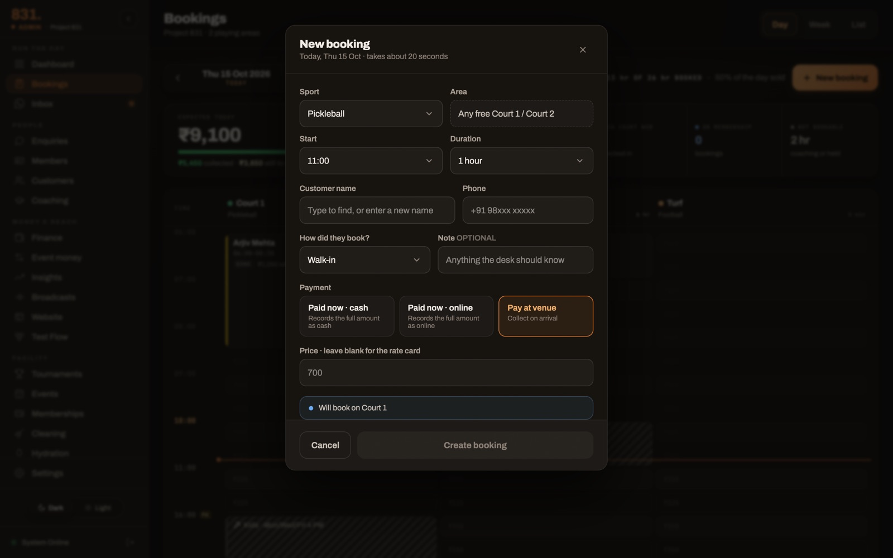
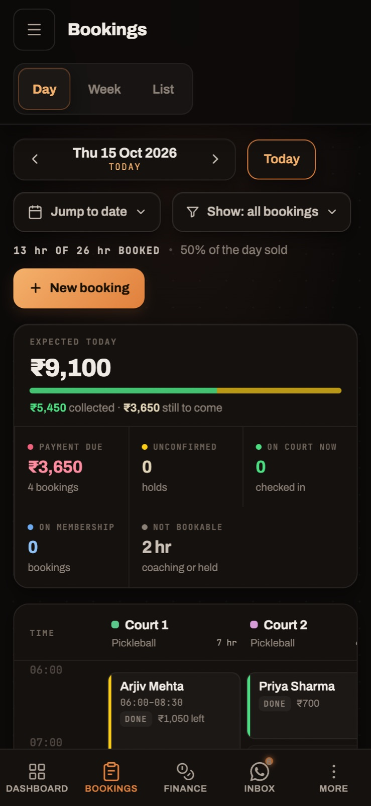
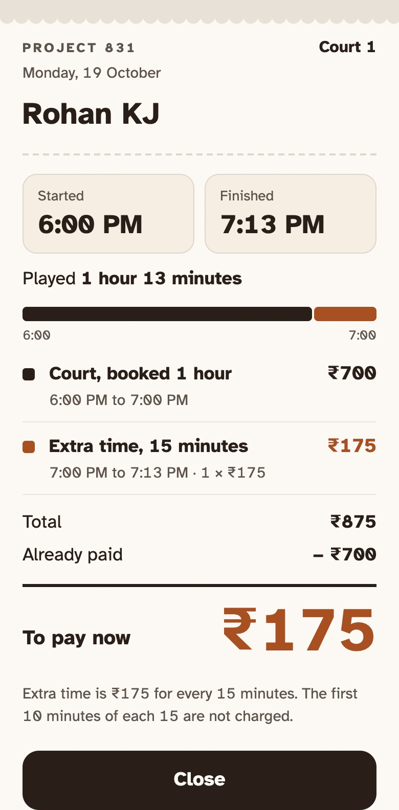

Project 831
A two-court pickleball venue I co-founded and run. I built the booking platform it runs on: a WhatsApp bot, a staff desk, a public widget and a voice agent, all asking one module what is free. Live since March, in daily use.

One answer about what is free
Four surfaces can take a booking and they cannot disagree. The desk, the public widget, the WhatsApp bot and the voice API all call one availability module, and the same module runs on the server when the booking is written. So the desk never offers a slot the bot has just taken, and a race on the last court comes back as a refusal rather than a double booking.

Recurrence, in three layers
A weekly programme needs a rule for what repeats and something that stops a weekend selling once it has happened. I split those apart on purpose, because the obvious design puts correctness in the cron job. The rule, the read-time selection that makes the site correct, and the nightly roll that only adds supply. A dead cron degrades to "nothing available", never to "book a date that already passed".
Dates that never slip a day
A booking date has no time in it, and a date with no time is the classic off-by-one: stored as midnight UTC, shown in a browser two zones west, it becomes the day before. So every date-only value is formatted in UTC, and every clock time is formatted in the venue's own zone, named, never the device's. The venue has no daylight saving, so its slot maths uses a fixed offset, and a rule naming any other zone is refused rather than computed wrongly. Doing it properly, for any zone, is what the coss ui build is.

The desk stopped doing maths
Every booking that ran over turned into a negotiation at the front desk. Staff Mode is two taps, Start and Finish, that produce the number, and a bill the customer can read settles it. Written for one person who doesn't read much. In the last 90 days, 303 court bookings; 30% were walk-ins entered by the desk; 53% had no full payment recorded. The first real shift is the test.

